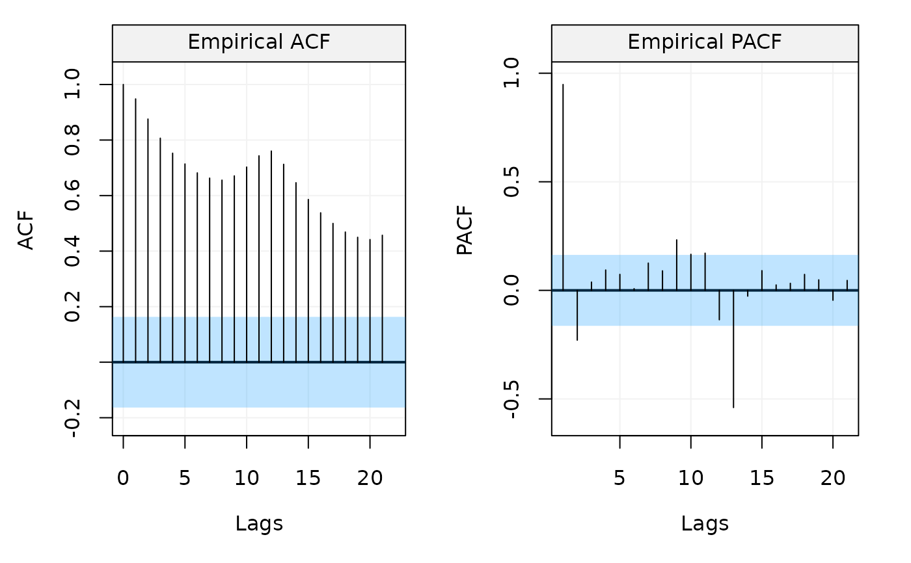

Correlation Analysis function computes and plots both empirical ACF and PACF or both univariate and multivariate cases.
corr_analysis(x, lagmax = 0, cor = TRUE, demean = TRUE, show.ci = TRUE, alpha = 0.05, plot = TRUE, ...)
| x | An |
|---|---|
| lagmax | A |
| cor | A |
| demean | A |
| show.ci | A |
| alpha | A |
| plot | A |
| ... | Additional parameters. |
Two array of dimensions \(N \times S \times S\).
#> $ACF #> , , x #> #> ACF #> 0 1.0000000 #> 1 0.9480473 #> 2 0.8755748 #> 3 0.8066812 #> 4 0.7526254 #> 5 0.7137700 #> 6 0.6817336 #> 7 0.6629044 #> 8 0.6556105 #> 9 0.6709483 #> 10 0.7027199 #> 11 0.7432402 #> 12 0.7603950 #> 13 0.7126609 #> 14 0.6463423 #> 15 0.5859234 #> 16 0.5379552 #> 17 0.4997475 #> 18 0.4687340 #> 19 0.4498707 #> 20 0.4416288 #> 21 0.4572238 #> #> attr(,"n") #> [1] 144 #> attr(,"class") #> [1] "ACF" "array" #> #> $PACF #> , , x #> #> PACF #> 0 0.948047341 #> 1 -0.229421874 #> 2 0.038147781 #> 3 0.093785438 #> 4 0.073606698 #> 5 0.007727603 #> 6 0.125597130 #> 7 0.089951343 #> 8 0.232488542 #> 9 0.166051260 #> 10 0.171274420 #> 11 -0.135431102 #> 12 -0.539691242 #> 13 -0.026610140 #> 14 0.090764982 #> 15 0.024955559 #> 16 0.032515570 #> 17 0.073432641 #> 18 0.048442115 #> 19 -0.045541680 #> 20 0.045752935 #> #> attr(,"n") #> [1] 144 #> attr(,"class") #> [1] "PACF" "array" #>